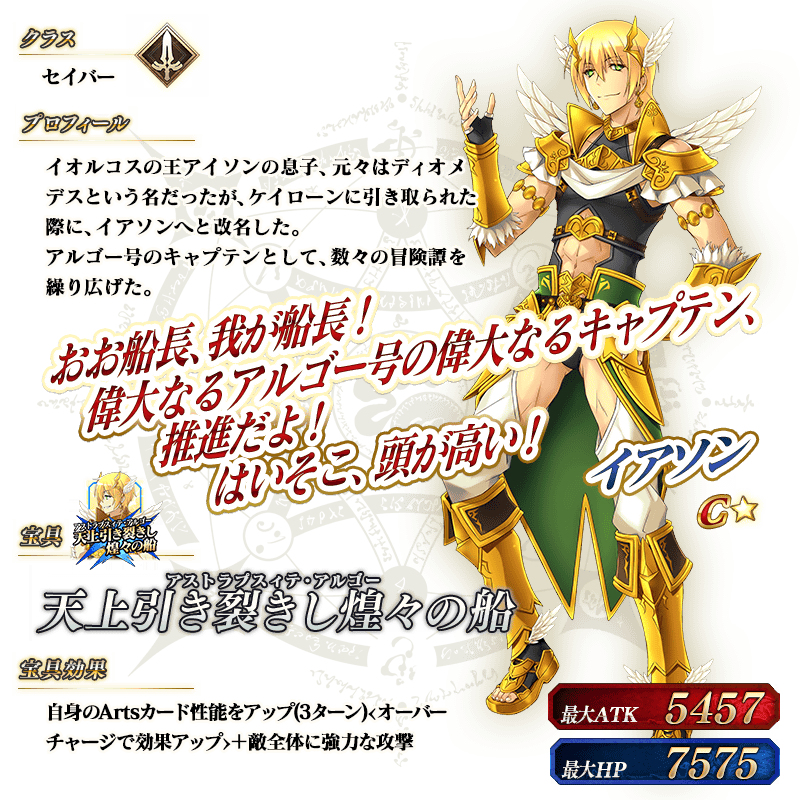
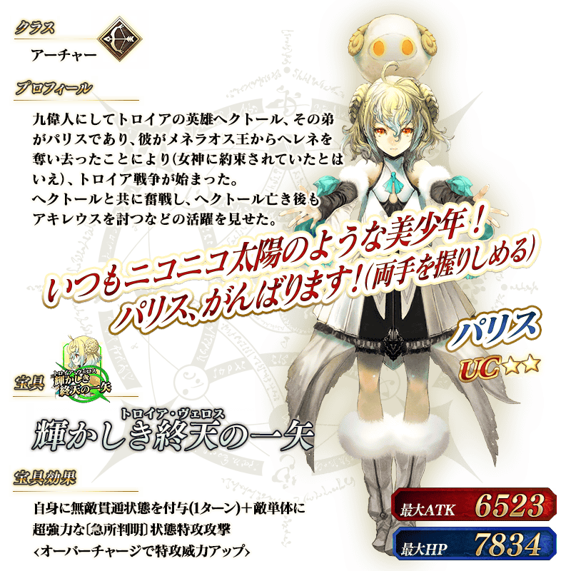
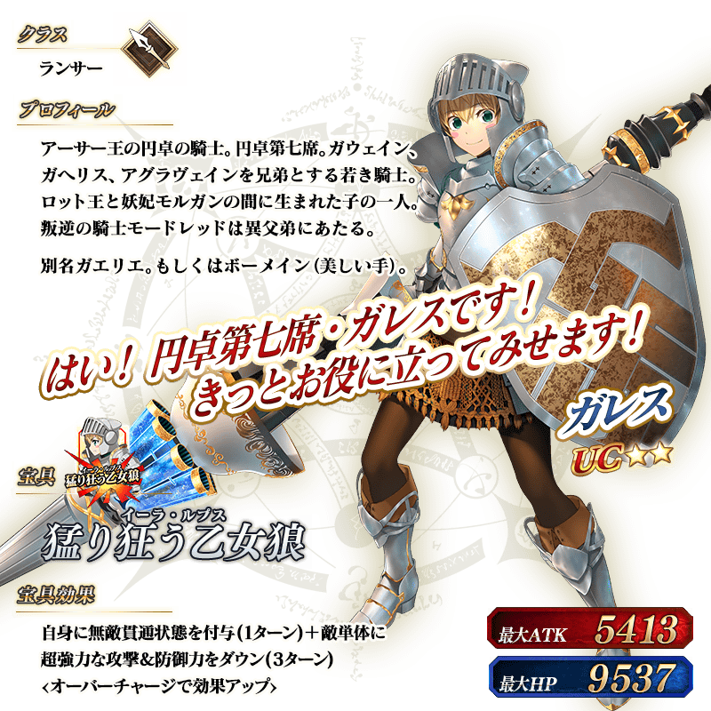
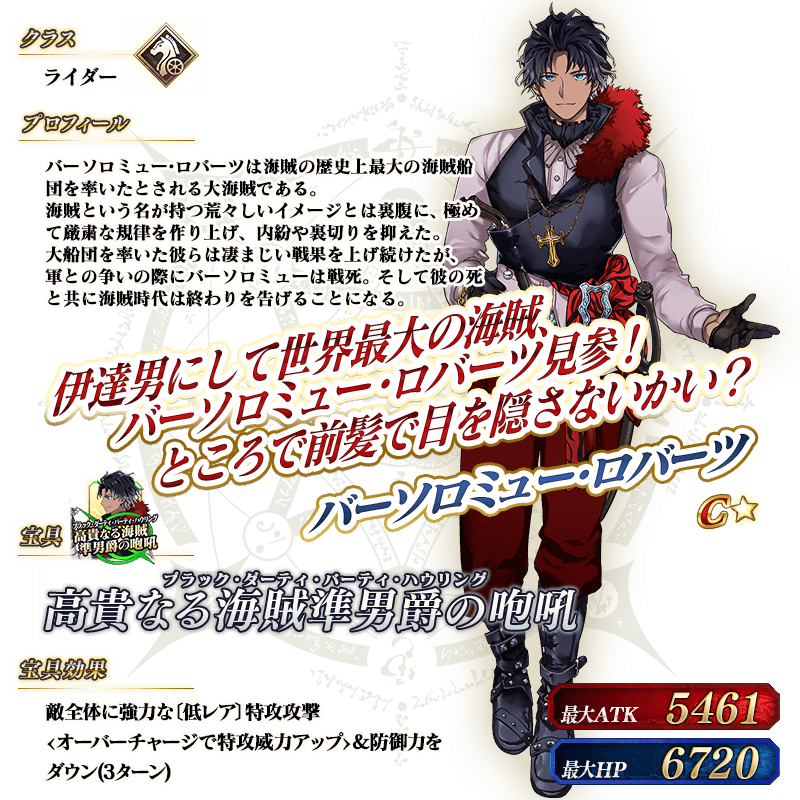
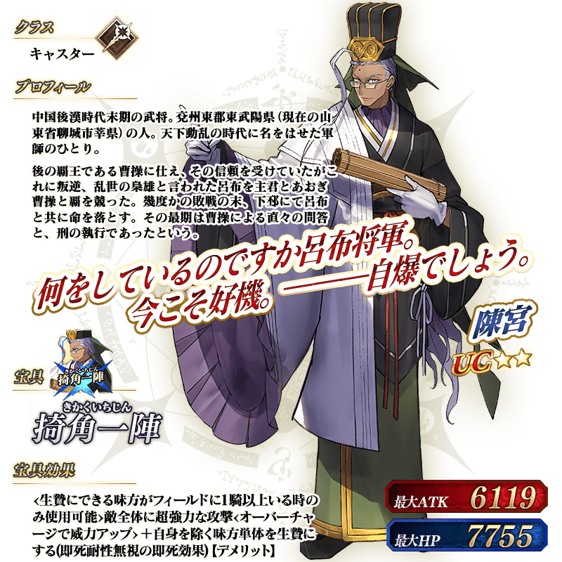
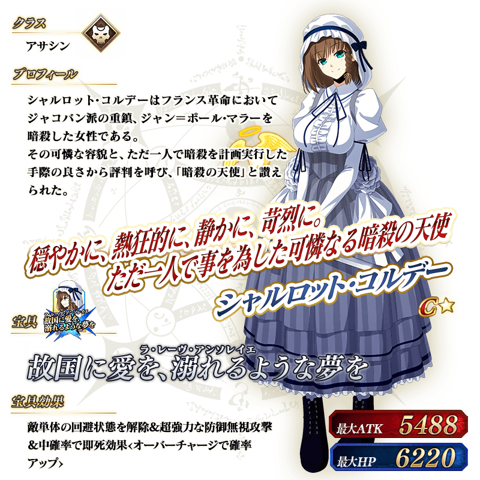
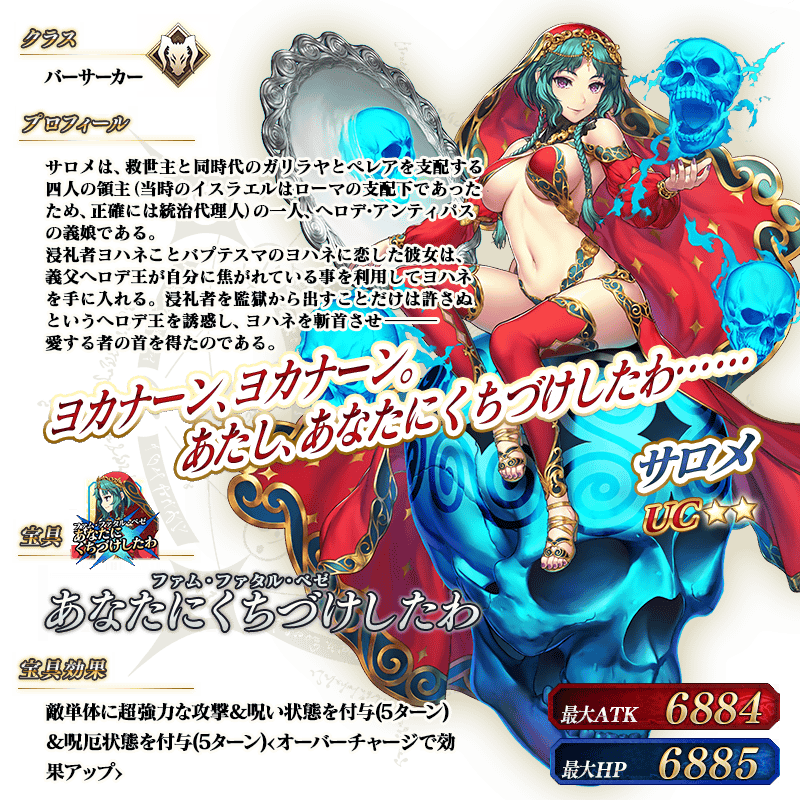

7位新從者「★1(C)伊阿宋」「★2(UC)帕里斯」「★2(UC)加雷斯」「★1(C)巴沙洛繆・羅伯茨」「★2(UC)陳宮」「★1(C)夏綠蒂・科黛」「★2(UC)莎樂美」在友情點數召喚登場！
下述介紹關於各自的的從者！
◆追加時間◆
2019年8月4日(日) 18:00～
※在友情點數召喚追加的新從者會恆常被抽出。 ※本頁面皆為開發中圖片。會有與實際圖片相異的情況。

※上述「★1(C)伊阿宋」的立繪為靈基再臨第2階段。



※上述「★2(UC)加雷斯」的立繪為靈基再臨第2階段。

 ※8月6日(二) 17:00圖片修正

※上述「★1(C)夏綠蒂・科黛」的立繪為靈基再臨第2階段。

※上述「★2(UC)莎樂美」的立繪為靈基再臨第2階段。
介紹「★1(C)伊阿宋」「★2(UC)帕里斯」「★2(UC)加雷斯」「★1(C)巴沙洛繆・羅伯茨」「★2(UC)陳宮」「★1(C)夏綠蒂・科黛」「★2(UC)莎樂美」的寶具演出！
在「Fate/Grand Order」官方網站內的公告中，以影片公開寶具演出，敬請確認。
其他還有，進行特別連續登入獎勵和所有每日關卡的AP消耗1/2等的「Fate/Grand Order Fes. 2019 ～4th Anniversary～」舉辦中！
關於詳情，請自下述橫幅確認。
■「Fate/Grand Order Fes. 2019 ～4th Anniversary～」詳細情報